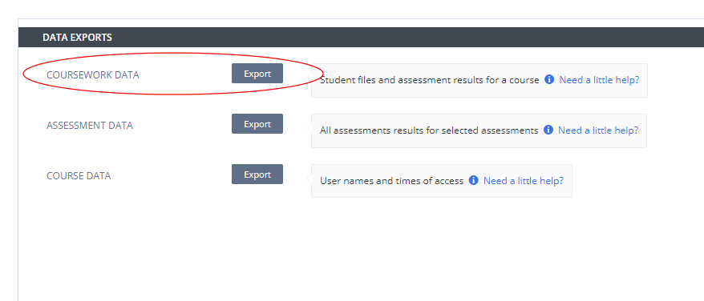
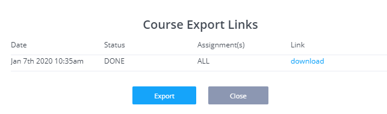
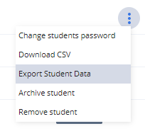
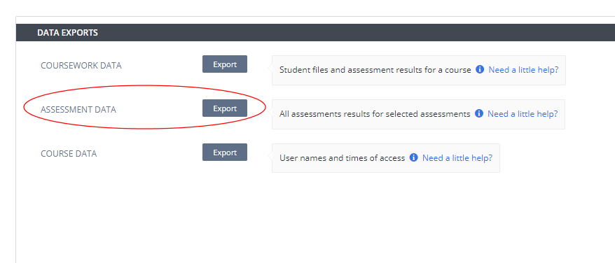
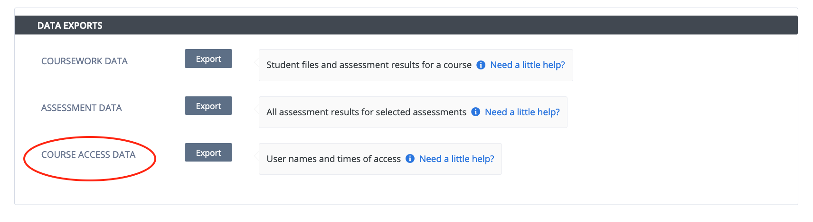
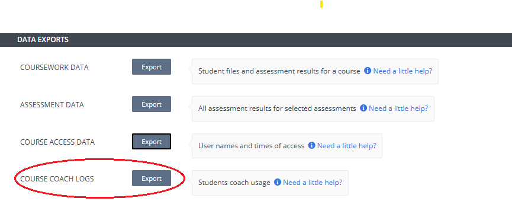
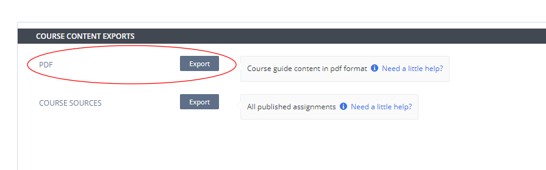
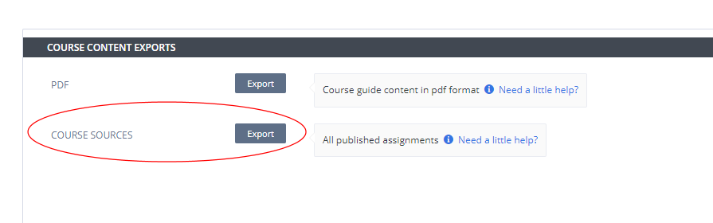
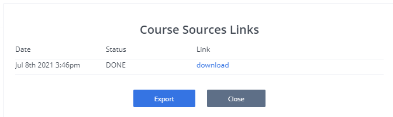

Data Exports¶
Export Coursework Data¶
You can export course data (including students workspaces) prior to deleting a course, if you want to retain the data. Follow these steps to delete the course data:
Navigate to the Courses page and select the course to open it.
Click the Export tab and then click Coursework Data.

All the data from the course is compiled in a .zip file. An email is then sent to you that includes a link to download the course data. The link remains active for 7 days and then the file is removed.
To access the download file within the 7-day period it remains active or to export additional files, click Course Data and click Export to download the file.

Note
You can also export individual assignment data if you do not need or require data for all the assignments in your course. See Export assignment data
Note
Students inactive for more than 90 days will not have their course data available for export. See Remove inactive students
Export Student Data for the Course¶
You can export course data for individual students (including their workspaces) rather than having to export the whole course data. Follow these steps to delete the course data:
Navigate to the Courses page and select the course to open it.
Click the Students tab and select the student
Right click the 3 blue dot menu and select Export Student Data.

All the data from the course is compiled in a .zip file. An email is then sent to you that includes a link to download the students data. The link remains active for 7 days and then the file is removed.
Note
Students inactive for more than 90 days will not have their course data available for export. See Remove inactive students
Export Assessment Data¶
To export data related to students assessment in individual or multiple assignments in the course, follow these steps:
Navigate to the Courses page and select the course to open it.
Click the Export tab and then click Assessment Data in the Export section.

When selected, a dialog shows allowing you to select the assignments to obtain the data.
The following data is exported to a .csv file for download (or into a .zip file containing individual csv files if multiple assignments selected):
Student_Name
First_Name
Last_Name
Username
Hashed_ID
Email Address
Assignment_Name
Total_Points_Earned
Total_Points_Possible
Time_Spent
and for each assessment:
<Assessment_Name>_Attempts
<Assessment_Name>_Answer
<Assessment_Name>_Earned_Points
<Assessment_Name>_Total_Points_Possible
Note
The data is retained for a maximum of 6 months.
Export Course Access Data¶
To export data related to users accessing assignments in the course, follow these steps:
Navigate to the Courses page and select the course to open it.
Click the Export tab and then click Course Access Data in the Export section.

The following data is exported to a .csv file for download:
Username
Users registered email address
First name
Last name
Date/time when user logged in
Access type (Log In, Log Out, Project Open, Project Close)
Assignment name (Book based assignments will report the name of the book)
Role in course (Teacher/Student)
Project path
IP address (IP address associated with login session)
Note
The data is retained for a maximum of 6 months.
Export Course Coach Logs¶
To export data related to users accessing assignments and feedback provided in a course, follow these steps:
Navigate to the Courses page and select the course to open it.
Click the Export tab and then click Course Coach Logs in the Export section.

The following data is exported to a .csv file for download:
Assignment_name (Book based assignments will report the name of the book)
Assessment_id
User_email
User_id
Time
Question
Context_guides
Context_error
Context_files
Response
Exporting and analyzing course coach log data helps the instructors to enhance the quality of the feedback and improve their learning experience.
Course Content Exports¶
Export PDF¶

Use this to obtain PDF versions of the guides content in your assignments. When selected, a dialog shows allowing you to select the assignments to obtain the PDF version.
You can select a single PDF where all selected assignments are compiled into one PDF file or to receive a PDF for each selected assignment.
You can also include teacher only notes in the PDF export
The link will be active for 7 days and after this time the file will be removed.
Export Course Sources¶
You can export course sources to obtain a zip file containing all the currently published assignments.
Navigate to the Courses page and select the course to open it.
Click the Export tab and then click Course Sources in the Export section.

The currently published versions of each assignment are compiled into a .zip file and each assignment is compiled into a .tar.zst file and can be downloaded. If you update the assignment in the future, you can create a new export.
To access the download or to export updated assignments, click Course Sources and click Export to create a new export or click the link to download the zip file.
